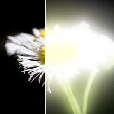

Resplandor profundo

Un resplandor intenso y brillante que llega lejos: un núcleo caliente junto a la capa que se desvanece suavemente en una bruma amplia y difusa.
Ajustes
| Ajuste | Tipo | Rango | Predeterminado |
|---|---|---|---|
| Radio | Número | 0 a 500 | 60 |
| Intensidad | Número | 0 a 10 | 1 |
| Atenuación | Número | 0 a 1 | 0.5 |
| Opacidad del brillo | Número | 0% a 100% | 100% |
| Opacidad original | Número | 0% a 100% | 100% |
| Brillo exterior | Número | 0% a 100% | 100% |
| Saturación | Número | -1 a 1 | 0 |
| Vibrancia | Número | -1 a 1 | 0 |
| Cambio de tono | Ángulo | -360° a 360° | 0° |
| Color de tinte | Color | – | #FF8A3D |
| Tinte | Número | 0% a 100% | 0% |
| Umbral | Activado o desactivado | – | Desactivado |
| Umbral bajo | Número | 0 a 1 | 0.5 |
| Umbral alto | Número | 0 a 1 | 1 |
| Suavidad del umbral | Número | 0 a 1 | 0.1 |